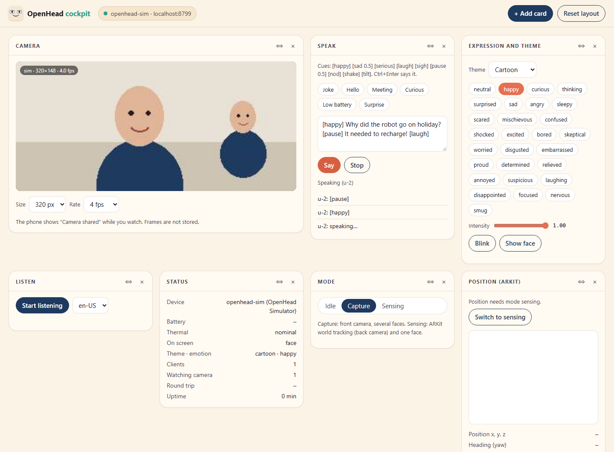

Öppen hårdvara · Öppen källkod
En hals till robotens ansikte.
En iPhone med OpenHead på en hals med fyra servon: en AI-assistent på skrivbordet som vänder sig mot dig, nickar, skakar på huvudet och följer dig med blicken. Utskrivna delar, Arduino-firmware, Python och en MCP-server.
Halsen är Open Duck Mini v2:s, utskriven från Open Ducks egna filer och anpassad för att hålla en telefon.

En AI-assistent på skrivbordet
En 3D-rendering av riggen: den följer ditt ansikte, hör din fråga och svarar med egen röst (slå på ljudet), kartlägger rummet med bakkameran medan frontkameran ser dig, skickar alla sensorer till din agent och visar allt i cockpiten i webbläsaren. Video på den riktiga riggen kommer härnäst.
Vad den gör
Telefonen är ansiktet och sinnena (det är OpenHead); det här är kroppen som rör den.
Tittar på dig
Telefonens frontkamera hittar ditt ansikte. Halsen vrider sig så att du hamnar i mitten, medan ögonen på skärmen följer dig.
Nickar och skakar
Ja, nej, en nyfiken lutning, eller titta vart som helst: yaw ±100°, pitch −20…+35°, roll ±25°, med mjuka rörelser.
Redo för AI-agenter
Två MCP-servrar bredvid varandra: openhead för ansiktet och sensorerna, openhead-body för halsen.
Säker från början
Uno släpper servona när kommandona uteblir i 150 ms, startar där de står, begränsar varje steg och har nödstopp.
Open Ducks hals
Fyra Feetech STS3215 i Open Duck Mini v2:s hals, med en ny telefonhållare, ett torn och en bas för elektroniken.
Prova utan hårdvara
En simulerad Uno med fyra servon kör samma kod: openhead-body --port fake look 30 10.
Delar
Allt utom de utskrivna delarna och telefonen.
| Antal | Del | Anmärkning |
|---|---|---|
| 4 | Feetech STS3215 seriellt bus-servo | Samma servo som i SO-101:s follower-arm (7,4 V, 1/345); 1/191 eller 1/147 fungerar också i halsen |
| 1 | Arduino Uno R4 WiFi | Styr servobussen; USB till datorn |
| 1 | Waveshare Bus Servo Adapter (A) | Seriellt servokort, bygel i läge B |
| 1 | Adafruit BNO085 IMU | På tornet som kroppens referens; Qwiic till Uno |
| 1 | iPhone 12 eller nyare | Kör OpenHead, monterad liggande |
| 1 | Kullager 608ZZ | Bakre stöd för roll-axeln |
| 1 | Nätaggregat 7,4 V, minst 3 A | Plus en kondensator 470–1000 µF och en säkring |
| – | Skruv M2 × 8, M3 × 12–16, M3 × 6, M2,5 × 6 | Hela listan finns i README |
| 1 | Högtalare (valfri) | Bluetooth till telefonen |
Utskrift
STL- och STEP-filer i hardware/print, och hela riggen som en STEP-sammanställning. Ungefär 250 g PLA.


| Del | Källa | Anmärkning |
|---|---|---|
| bas, torn, telefonhållare, bakbåge | ny | Stativet, telefonramen med buren för roll-servot, bågen med sätet för 608ZZ |
| head_yaw_to_roll_bearing | Open Duck, ändrad | En utskriven tapp Ø7,9 för lagret; 4–5 väggar och 100 % fyllnad runt den |
| halsplåtar, head_pitch_to_yaw | Open Duck, oförändrade | Open Duck Mini v2:s egna filer |
| TPU-hörn, bakkudde, fotsula | ny, valfri | Stötskydd för telefonen och en halkfri fot |
| nollmall | verktyg | Ställer nack-pitchens nolläge vid kalibreringen |
Mjukvara
Firmware för Uno R4 WiFi och ett Python-paket med CLI, bibliotek och MCP-server.
# koppling: Unos stift 0/1 till Waveshare-adaptern (läge B), BNO085 på Qwiic, 7,4 V till adaptern arduino-cli compile --fqbn arduino:renesas_uno:unor4wifi -u -p COM5 firmware/body_uno cd python && uv sync uv run openhead-body --port fake look 30 10 # utan hårdvara: en simulerad Uno uv run openhead-body look 30 10 # yaw, pitch (roll) i grader uv run openhead-body nod # nod | shake | tilt | home | relax uv run openhead-body follow --phone 192.168.1.20 # vänd dig mot personen telefonen ser
+yaw vrider åt huvudets vänster, +pitch tittar upp: samma konvention som OpenHeads faces-ström, så ett ansiktes bäring är direkt den yaw som ska vridas. Servoinställning och kalibrering: openhead-body-bench och openhead-body-calib.
Se huvudet i cockpiten
OpenHead 0.5 öppnar en panel för telefonen i webbläsaren: vad kamerorna ser (fram eller bak), alla sensorer, vad huvudet ska säga (med exempel), tema och känsla, som kort du kan flytta, lägga till och ta bort. Praktiskt när du ställer in riggen: du ser vad huvudet ser medan halsen vrider sig.

openhead cockpit --device 192.168.1.20 # OpenHeads Python-verktyg; telefonen visar "Camera shared"
Använd den från en AI-agent
Kör båda MCP-servrarna: OpenHeads för ansiktet, kamerorna och sensorerna, och den här för halsen. Para telefonen en gång med openhead pair.
claude mcp add openhead --scope user -- uvx --from "openhead[mcp] @ git+https://github.com/PatrikBichis/openhead@v0.4.0#subdirectory=python" openhead mcp --device 192.168.1.20 claude mcp add openhead-body --scope user -- uvx --from "git+https://github.com/PatrikBichis/openhead-desktop-body#subdirectory=python" openhead-body --phone 192.168.1.20 mcp
look(yaw, pitch, roll): rikta huvudetgesture(nod | shake | tilt),home(),relax()follow_face(on): vänd dig mot personen telefonen serstatus(): pose, ledvinklar, servolast, busspänning
Fråga sedan: ”Titta på mig och nicka om du ser mig.” Andra agenter (Claude Desktop, Codex, Cursor, Gemini, VS Code): README (på engelska).
Bygger på Open Duck Mini
Halsens design, dess utskrivna delar, servolägen och ledgränser kommer från Open Duck Mini v2, av Antoine Pirrone med flera (Apache 2.0). Telefonhållaren, tornet, basen och bakbågen är nya. Modellerna av servot och adaptern kommer från SO-ARM100 (Apache 2.0).
Status: riggen är utskriven och monterad. Firmware och verktyg är testade mot en simulerad Uno; ledernas riktning, nollägen och IMU:ns axlar kontrolleras på den riktiga riggen härnäst.